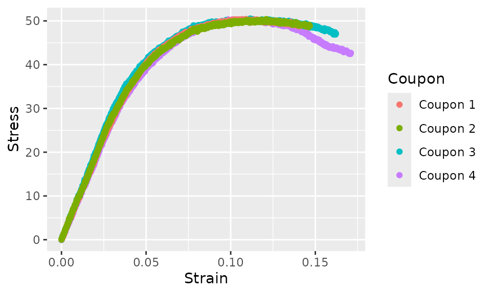

This vignette demonstrates generation of averaged stress-strain curves from data from several coupons. The same procedure can be used to generate bearing load-deformation curves and other similar curves.
There are two functions provided by the cmstatrExt
package for doing this. The function average_curve_lm()
uses stats::lm() behind the scenes to fit a curve defined
by a formula to the data. The function
average_curve_optim() uses numeric optimization to fit a
curve defined by a user-specified function to the data. Use the former
function for fitting polynomials, use the latter for fitting exponential
models or models with discontinuities. Both will be discussed in more
detail in this vignette.
Setup
In this example, the following packages need to be loaded:
knitr::opts_chunk$set(message = FALSE, warning = FALSE)
library(cmstatrExt)
library(tidyverse)
#> ── Attaching core tidyverse packages ──────────────────────── tidyverse 2.0.0 ──
#> ✔ dplyr 1.1.3 ✔ readr 2.1.4
#> ✔ forcats 1.0.0 ✔ stringr 1.5.0
#> ✔ ggplot2 3.4.4 ✔ tibble 3.2.1
#> ✔ lubridate 1.9.3 ✔ tidyr 1.3.0
#> ✔ purrr 1.0.2
#> ── Conflicts ────────────────────────────────────────── tidyverse_conflicts() ──
#> ✖ dplyr::filter() masks stats::filter()
#> ✖ dplyr::lag() masks stats::lag()
#> ℹ Use the conflicted package (<http://conflicted.r-lib.org/>) to force all conflicts to become errorsExample Data
The cmstatrExt package comes with some example
stress-strain data. The first few rows of this data are:
head(pa12_tension)
#> # A tibble: 6 × 3
#> Coupon Strain Stress
#> <chr> <dbl> <dbl>
#> 1 Coupon 4 0 0.0561
#> 2 Coupon 4 0.000200 0.247
#> 3 Coupon 4 0.000400 0.569
#> 4 Coupon 4 0.000601 0.440
#> 5 Coupon 4 0.000801 0.778
#> 6 Coupon 4 0.00100 0.854This data is in “tidy” format. This means that each data-point
(stress-strain value) is in a row of the data.frame. This
example data set contains stress-strain data from four coupons (Samples
1 through 4). Each row identifies the coupon that the observation comes
from. While the order of the columns does not matter and you can give
each column any name you wish, the data will need to be in this type of
format.
Let’s plot the pa12_tension example data.
pa12_tension %>%
ggplot(aes(x = Strain, y = Stress, color = Coupon)) +
geom_point()
Fitting a Polynomial Model
For the first example, we’ll fit the following quadratic model:
\[
\sigma = c_1 \epsilon + c_2 \epsilon^2
\] where \(\sigma\) is the
stress, \(\epsilon\) is the strain and
\(c_1\) and \(c_2\) are constants that we’ll find. We
need to write this as an R formula, which has
slightly different notation. The stress and strain variables in our data
are Stress and Strain, respectively, so we’ll
use those variable names in the formula.
Notice that in this formula, a tilde (~) is used instead
of an equal sign. You’ll also notice that we’ve wrapped the terms on the
right-hand side inside the identity function I(): the
reason for this is that lm will treat Strain^2
as an interaction, rather than squaring the value of
Strain, while I(Strain^2) will actually square
the value of Strain. The formula doesn’t need coefficients
(e.g. \(c_1\) and \(c_2\)). Finally, notice that we’ve included
the term +0, which tells lm that we want the
intercept to be zero, which will normally be desirable due to the
physical notion that stress ought to be zero at zero strain.
The function average_curve_lm takes four arguments. The
first is a data.frame with the data. The second is the name
of the variable defining the coupon. The third is the formula that we
just discussed. The last argument is the number of “bins”: this has a
default of 100 and hence can be omitted. See the documentation for this
function for information about binning the data.
Let’s run this function and then execute the summary
method on the result:
curve_quadratic <- average_curve_lm(
pa12_tension, Coupon,
Stress ~ I(Strain) + I(Strain^2) + 0
)
summary(curve_quadratic)
#>
#> Range: ` Strain ` in [0, 0.1409409 ]
#> n_bins = 100
#>
#> Call:
#> average_curve_lm(data = pa12_tension, coupon_var = Coupon, model = Stress ~
#> I(Strain) + I(Strain^2) + 0)
#>
#> Residuals:
#> Min 1Q Median 3Q Max
#> -2.3812 -1.1354 0.0107 1.4057 4.2013
#>
#> Coefficients:
#> Estimate Std. Error t value Pr(>|t|)
#> I(Strain) 1010.585 4.016 251.6 <2e-16 ***
#> I(Strain^2) -4913.506 36.786 -133.6 <2e-16 ***
#> ---
#> Signif. codes: 0 '***' 0.001 '**' 0.01 '*' 0.05 '.' 0.1 ' ' 1
#>
#> Residual standard error: 1.626 on 398 degrees of freedom
#> Multiple R-squared: 0.9985, Adjusted R-squared: 0.9984
#> F-statistic: 1.286e+05 on 2 and 398 DF, p-value: < 2.2e-16The summary method shows the strain range over which the
curve was fit. This range always starts at zero and ends at the
lowest maximum strain of any individual coupon. The
summary method also lists the coefficients as well as
information about whether each term is statistically significant, the
residuals and R-squared values.
Next, let’s plot the original data and the curve fit. We’ll use the
augment method to add the curve fit to the original data,
then pass the result to ggplot.
curve_quadratic %>%
augment() %>%
ggplot(aes(x = Strain)) +
geom_point(aes(y = Stress, color = Coupon)) +
geom_line(aes(y = .fit))Due to the polynomial model that we chose (quadratic), this curve fit is poor. We can do better. Let’s try a cubic function next.
curve_cubic <- average_curve_lm(
pa12_tension, Coupon,
Stress ~ I(Strain) + I(Strain^2) + I(Strain^3) + 0
)
summary(curve_cubic)
#>
#> Range: ` Strain ` in [0, 0.1409409 ]
#> n_bins = 100
#>
#> Call:
#> average_curve_lm(data = pa12_tension, coupon_var = Coupon, model = Stress ~
#> I(Strain) + I(Strain^2) + I(Strain^3) + 0)
#>
#> Residuals:
#> Min 1Q Median 3Q Max
#> -2.3080 -0.4003 -0.1726 0.3103 2.2058
#>
#> Coefficients:
#> Estimate Std. Error t value Pr(>|t|)
#> I(Strain) 1173.285 4.662 251.69 <2e-16 ***
#> I(Strain^2) -8761.916 102.493 -85.49 <2e-16 ***
#> I(Strain^3) 20480.874 537.832 38.08 <2e-16 ***
#> ---
#> Signif. codes: 0 '***' 0.001 '**' 0.01 '*' 0.05 '.' 0.1 ' ' 1
#>
#> Residual standard error: 0.7546 on 397 degrees of freedom
#> Multiple R-squared: 0.9997, Adjusted R-squared: 0.9997
#> F-statistic: 3.985e+05 on 3 and 397 DF, p-value: < 2.2e-16
curve_cubic %>%
augment() %>%
ggplot(aes(x = Strain)) +
geom_point(aes(y = Stress, color = Coupon)) +
geom_line(aes(y = .fit))This cubic model is a much better fit. The equation for this curve fit is:
\[ \sigma = 1174 \, \epsilon - 8783 \, \epsilon^2 + 20586 \, \epsilon^3 \]
Strain does not need to be the independent variable and stress does not need to be the dependent variable. We could fit a model with these reversed.
average_curve_lm(
pa12_tension, Coupon,
Strain ~ I(Stress) + I(Stress^2) + I(Stress^3) + I(Stress^4) + 0
) %>%
augment() %>%
ggplot(aes(y = Stress)) +
geom_point(aes(x = Strain, color = Coupon)) +
geom_line(aes(x = .fit))In this case, the fit is not very good, so it’s not of much practical use. However, note that the curve fit ends at the lowest maximum stress value of any individual coupon this time. The curve fit will always end at the lowest maximum value of the independent variable (the variable on the right hand side of the formula).
Fitting a Bilinear Model
Next, we turn our attention to fitting a model that cannot be
represented by an R formula. We’ll fit the
following model:
\[ \sigma = \left\{ \begin{matrix} c_1 \epsilon & \text{if }\epsilon \le \epsilon_1 \\ c_2 \left(\epsilon - \epsilon_1\right) + c_1\epsilon_1 & \text{otherwise} \end{matrix} \right. \]
This model will thus be a straight line starting from the origin
extending to an unknown value of strain (\(\epsilon_1\)), then continuing with a
different slope. In order to use this model with
average_curve_optim, we need to write this as an
R function where the first argument is the independent
variable (strain in our case) and the second argument is a vector of
parameters. In this case, there are three parameters, \(c_1\), \(c_2\) and \(\epsilon_1\).
bilinear_fn <- function(strain, par) {
c1 <- par[1]
c2 <- par[2]
e1 <- par[3]
if (strain <= e1) {
return(c1 * strain)
} else {
return(c2 * (strain - e1) + c1 * e1)
}
}The function average_curve_optim takes nine
arguments:
-
dataadata.framewith the stress-strain data -
coupon_varthe name of the column representing the coupon -
x_varthe name of the column representing the independent variable -
y_varthe name of column representing the dependent variable -
fnthe function representing the model -
paran initial guess at the parameters of the model -
n_binsthe number of bins to sort the data into. The default is 100 and it does not need to be specified to accept the default. -
methodthe method used byoptim(). Defaults to “L-BFGS-B” -
...extra parameters to pass tooptim()
We’ll call this function:
curve_bilinear <- average_curve_optim(
pa12_tension,
Coupon, Strain, Stress,
bilinear_fn,
c(1, 1, 0.04) # the initial guess
)
curve_bilinear
#>
#> Range: ` Strain ` in [ 0, 0.1409409 ]
#>
#> Call:
#> average_curve_optim(data = pa12_tension, coupon_var = Coupon,
#> x_var = Strain, y_var = Stress, fn = bilinear_fn, par = c(1,
#> 1, 0.04))
#>
#> Parameters:
#> [1] 265.6498522 316.1356934 -0.3258095The value of the third parameter, \(\epsilon_1\) is well outside the range we’d expect. We’d expect that the “knee” to be somewhere in the range of 0.025-0.100. We can specify upper and lower bounds on the parameters as follows:
curve_bilinear <- average_curve_optim(
pa12_tension,
Coupon, Strain, Stress,
bilinear_fn,
c(1, 1, 0.04),
lower = c(0, 0, 0.025),
upper = c(2000, 2000, 0.100)
)
curve_bilinear
#>
#> Range: ` Strain ` in [ 0, 0.1409409 ]
#>
#> Call:
#> average_curve_optim(data = pa12_tension, coupon_var = Coupon,
#> x_var = Strain, y_var = Stress, fn = bilinear_fn, par = c(1,
#> 1, 0.04), lower = c(0, 0, 0.025), upper = c(2000, 2000,
#> 0.1))
#>
#> Parameters:
#> [1] 873.46774319 79.60813130 0.05093549We can now plot the curve fit over laid with the original data.
Preprocessing Data
The example data in the pa12_tension data set is fairly
well behaved and does not need pre-processing. However, most data that
you will actually deal with will require pre-processing.
The fff_shear data set that comes with the
cmstatrExt package is more typical data that does require
pre-processing. Let’s start by plotting this data.
fff_shear %>%
ggplot(aes(x = Strain, y = Stress, color = Specimen)) +
geom_point()There are three aspects of this data that we’ll deal with:
- The post-failure behavior at high strains will be removed. This part of the stress-strain curve is not important to most structural analysis and will make cure-fitting difficult.
- We’ll remove the “toe” at the start of the curves. (The “toe” is the small portion of the curves at low strain that have a relatively low slope). Depending on the test method, this “toe” can be caused by behavior like the test coupon seating itself in the test fixture, or clearance being taken up. Depending on the cause of the “toe,” it may be desirable to remove it. In this case, removing it is desirable.
- The curves, even with the “toe” removed, do no pass through the origin. This is due to an offset in the strain measurement that does not correspond to the physical behavior of the material, so we’ll apply an appropriate offset.
None of these adjustments are done using the functionality of
cmstatrExt, but this example is included anyways as these
types of adjustments are typically a pre-requisite of curve fitting
using cmstatrExt.
We’ll start by removing the offset from the data. To do this, we’ll
fit a straight line to the data from each coupon over a stress range of
1000 to 3000 psi, find the x-intercept of this line and
subtract this x-intercept from the strain value. This is a bit
complicated, so we’ll do it in a few steps before combining everything.
We’ll start by filtering the data so that the stress values are in the
range 1000 to 3000, grouping by Specimen and finding the
x-intercept for each. This code will use the nest(),
mutate() map() pattern.
fff_shear %>%
filter(Stress > 1000 & Stress < 3000) %>%
group_by(Specimen) %>%
nest() %>%
mutate(lm = map(data, ~lm(Strain ~ Stress, data = .))) %>%
mutate(x_intercept = map(lm, ~predict(.x, data.frame(Stress = 0)))) %>%
select(-c(lm, data)) %>%
unnest(x_intercept)
#> # A tibble: 3 × 2
#> # Groups: Specimen [3]
#> Specimen x_intercept
#> <chr> <dbl>
#> 1 A -0.000163
#> 2 B -0.000117
#> 3 C -0.000432Now we’ll use inner_join() to join the
x_intercept column to the original data (matching the
appropriate Specimen). We’ll use head() to
just show the first 6 rows for brevity.
fff_shear %>%
filter(Stress > 1000 & Stress < 3000) %>%
group_by(Specimen) %>%
nest() %>%
mutate(lm = map(data, ~lm(Strain ~ Stress, data = .))) %>%
mutate(x_intercept = map(lm, ~predict(.x, data.frame(Stress = 0)))) %>%
select(-c(lm, data)) %>%
unnest(x_intercept) %>%
inner_join(fff_shear, by = "Specimen") %>%
head(6)
#> # A tibble: 6 × 4
#> # Groups: Specimen [1]
#> Specimen x_intercept Stress Strain
#> <chr> <dbl> <dbl> <dbl>
#> 1 A -0.000163 230. 0
#> 2 A -0.000163 241. 0.000273
#> 3 A -0.000163 240. 0.000426
#> 4 A -0.000163 245. 0.000536
#> 5 A -0.000163 246. 0.000597
#> 6 A -0.000163 264. 0.000834Finally, we’ll subtract the x-intercept from the strain for each
coupon to obtain the corrected data (and delete the unneeded
x_intercept column).
fff_shear_offset <- fff_shear %>%
filter(Stress > 1000 & Stress < 3000) %>%
group_by(Specimen) %>%
nest() %>%
mutate(lm = map(data, ~lm(Strain ~ Stress, data = .))) %>%
mutate(x_intercept = map(lm, ~predict(.x, data.frame(Stress = 0)))) %>%
select(-c(lm, data)) %>%
unnest(x_intercept) %>%
inner_join(fff_shear, by = "Specimen") %>%
mutate(Strain = Strain - x_intercept) %>%
select(-c(x_intercept))We’ll plot this now.
fff_shear_offset %>%
ggplot(aes(x = Strain, y = Stress, color = Specimen)) +
geom_point()There are many approaches to removing the post-failure behavior. The specific approach that should be used will depend on the data and test method. In some cases, you might choose to simply manually delete some rows from the data file. However, if you’re processing more data, you may want to truncate the data using some code. Here, we’ll approach the removal of the post-failure behavior by finding the data that has a local slope that is sufficiently negative. We’ll do this by finding the secant over 5 points and checking if this value is more negative than a certain threshold. First, let’s plot the data and color it by a logical value indicating whether we’ll remove the point. This will help find an appropriate threshold using iteration for how negative a slope should cause a point to be removed.
fff_shear_offset %>%
group_by(Specimen) %>%
mutate(Lead_Stress = lead(Stress, 5),
Lead_Strain = lead(Strain, 5),
Slope = (Lead_Stress - Stress) / (Lead_Strain - Strain),
Remove = Slope < -1e5 | is.na(Slope)) %>%
ggplot(aes(x = Strain, y = Stress, shape = Specimen, color = Remove)) +
geom_point()The criteria above seems to cut the data off at about the correct point, but after the initial cutoff, some subsequent data would be incorrectly retained. In order to avoid this, we’ll add another criteria that for each curve, as soon as a single data point is removed, all subsequent data points will also be removed.
fff_shear_offset %>%
group_by(Specimen) %>%
mutate(Lead_Stress = lead(Stress, 5),
Lead_Strain = lead(Strain, 5),
Slope = (Lead_Stress - Stress) / (Lead_Strain - Strain),
Remove = Slope < -1e5 | is.na(Slope),
Remove = cumsum(Remove) > 0) %>%
ggplot(aes(x = Strain, y = Stress, shape = Specimen, color = Remove)) +
geom_point()We’ll save this result to a new variable, remove the groupings, filter out the points that we intend to remove and drop the unneeded temporary variables.
fff_shear_truncated <- fff_shear_offset %>%
group_by(Specimen) %>%
mutate(Lead_Stress = lead(Stress, 5),
Lead_Strain = lead(Strain, 5),
Slope = (Lead_Stress - Stress) / (Lead_Strain - Strain),
Remove = Slope < -1e5 | is.na(Slope),
Remove = cumsum(Remove) > 0) %>%
ungroup() %>%
filter(!Remove) %>%
select(Specimen, Stress, Strain)Next, we’ll remove the “toe” of each curve. The “toe” extends to a
stress of somewhat less than 1000 psi, so we’ll remove the
“toe” by simply removing all the data with a stress less than 1000
psi.
Now, let’s plot this pre-processed data.
fff_shear_truncated_no_toe %>%
ggplot(aes(x = Strain, y = Stress, color = Specimen)) +
geom_point() +
xlim(c(0, NA)) +
ylim(c(0, NA))Now, let’s try fitting an averaged curve to this data.
curve_fff_shear <- fff_shear_truncated_no_toe %>%
average_curve_lm(
Specimen,
Stress ~ I(Strain) + I(Strain^2) + I(Strain^3) + 0
)
curve_fff_shear
#>
#> Range: ` Strain ` in [ 0, 0.112092 ]
#>
#> Call:
#> average_curve_lm(data = ., coupon_var = Specimen, model = Stress ~
#> I(Strain) + I(Strain^2) + I(Strain^3) + 0)
#>
#> Coefficients:
#> I(Strain) I(Strain^2) I(Strain^3)
#> 129670 -312398 -2060929And we’ll plot this curve fit overlaid on the data with only the strain offset corrected (leaving the “toe” and the post-failure behavior intact).
Plots for Publication
The last part of this vignette will focus on creating plots for publication in reports. We’ll focus on the following items as examples. It will be up to you how you want to customize your plots for your particular publication.
- Changing the theme
- Overlaying curves and data from multiple environmental conditions
- Adding a secondary y-axis to show both US Customary and SI units
The cmstatrExt package does not come with any data sets
with multiple environmental conditions. We’ll “fake it” for illustration
purposes by scaling the pa12_tension stress by 50% and
strain by 125% to generate data for the “Fake ETA” environmental
condition. We’ll create a new data frame by stacking the original
pa12_tension data frame and a version of the
pa12_tension data frame with the stress scaled. Before
stacking these data frames, we’ll add a new column for condition.
pa12_tension_conditions <-
bind_rows(
pa12_tension %>%
mutate(Condition = "RTA"),
pa12_tension %>%
mutate(Condition = "Fake ETA",
Stress = 0.50 * Stress,
Strain = 1.25 * Strain)
)We already have a cubic model for the original
pa12_tension data, but that model was missing the
Condition column, so we’ll fit it again.
curve_cubic_rta <- pa12_tension_conditions %>%
filter(Condition == "RTA") %>%
average_curve_lm(
Coupon,
Stress ~ I(Strain) + I(Strain^2) + I(Strain^3) + 0
)
curve_cubic_rta
#>
#> Range: ` Strain ` in [ 0, 0.1409409 ]
#>
#> Call:
#> average_curve_lm(data = ., coupon_var = Coupon, model = Stress ~
#> I(Strain) + I(Strain^2) + I(Strain^3) + 0)
#>
#> Coefficients:
#> I(Strain) I(Strain^2) I(Strain^3)
#> 1173 -8762 20481We’ll do the same for the “Fake ETA” data.
curve_cubic_fake_eta <- pa12_tension_conditions %>%
filter(Condition == "Fake ETA") %>%
average_curve_lm(
Coupon,
Stress ~ I(Strain) + I(Strain^2) + I(Strain^3) + 0
)
curve_cubic_fake_eta
#>
#> Range: ` Strain ` in [ 0, 0.1761762 ]
#>
#> Call:
#> average_curve_lm(data = ., coupon_var = Coupon, model = Stress ~
#> I(Strain) + I(Strain^2) + I(Strain^3) + 0)
#>
#> Coefficients:
#> I(Strain) I(Strain^2) I(Strain^3)
#> 469.3 -2803.8 5243.1Now, we can plot the two curves.
bind_rows(
augment(curve_cubic_rta),
augment(curve_cubic_fake_eta)
) %>%
ggplot(aes(x = Strain, y = .fit, color = Condition)) +
geom_line()In some cases, you’d also want to show the raw data, which can be
done as follows. Note that we needed to set the group
aestetic in the call to geom_line().
bind_rows(
augment(curve_cubic_rta),
augment(curve_cubic_fake_eta)
) %>%
group_by(Condition) %>%
ggplot(aes(x = Strain)) +
geom_point(aes(y = Stress, color = Condition)) +
geom_line(aes(y = .fit, group = Condition))Next, we’ll add a secondary y-axis. Since the primary y-axis is in
units of MPa, the secondary y-axis will be in units of
ksi. To do this, we’ll use a call to
scale_y_continuous()
bind_rows(
augment(curve_cubic_rta),
augment(curve_cubic_fake_eta)
) %>%
ggplot(aes(x = Strain, y = .fit, color = Condition)) +
geom_line() +
scale_y_continuous(
"Stress [MPa]",
sec.axis = sec_axis(~ . * 0.1450377377, name = "Stress [ksi]")
)And it’s likely that you’d want to change the theme of the plot
using, for example, theme_bw() or your own custom
theme.